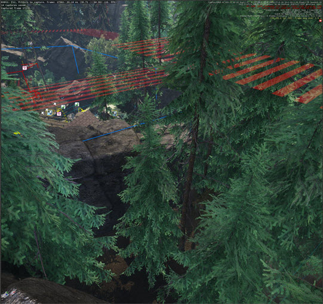
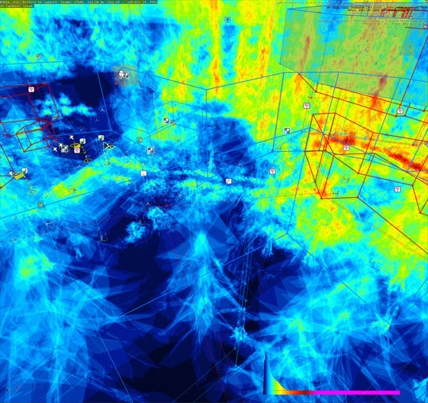
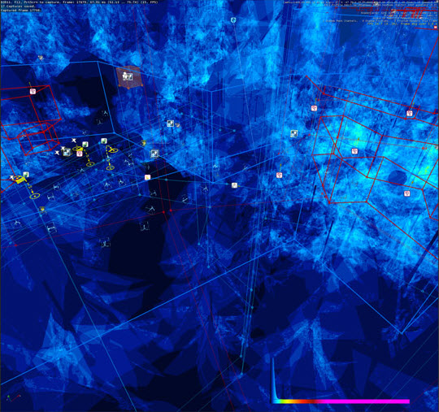
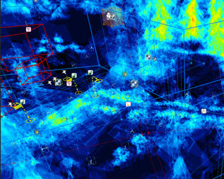
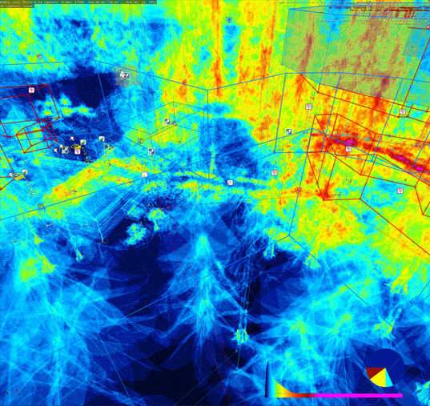
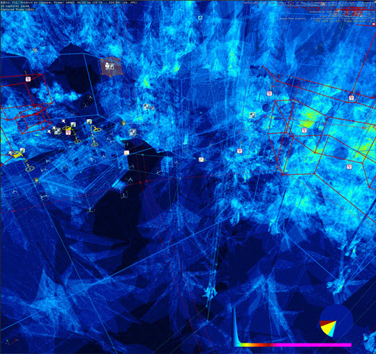
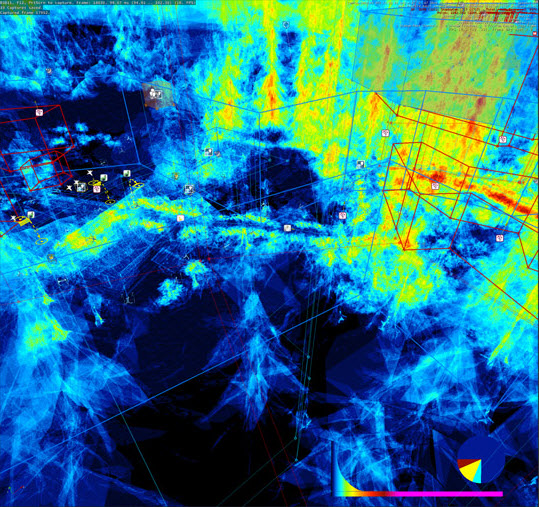
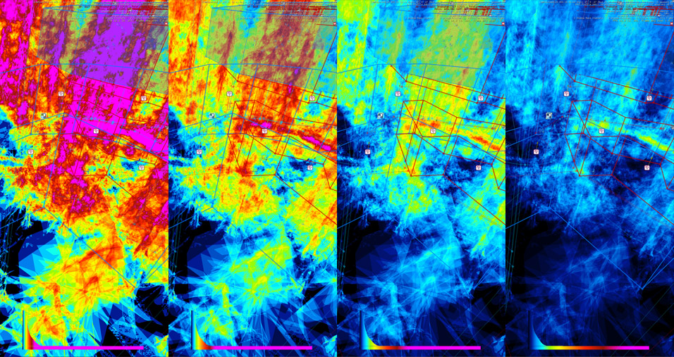
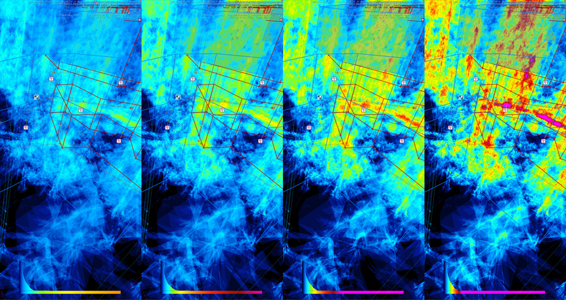
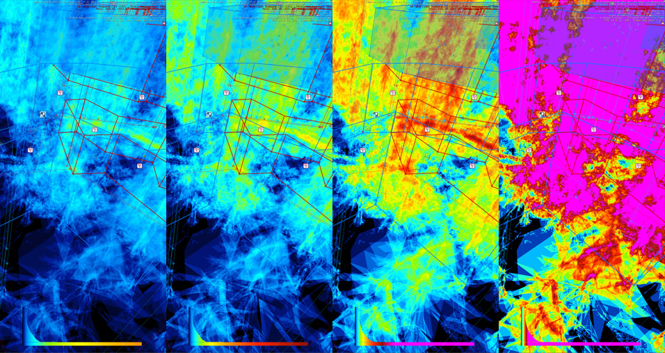

Overview
The Overdraw-complexity Debug View is a debug-mode that can be used by developers and artists who need a detailed visual information about the current state of the shading efficiency in regard to the depth-buffer and the quad-shading.
Modes
A successful depth-test prevents the GPU from generating the pixel-shader instances. On the other hand, a successful depth-test does not necessarily prevent the GPU from eliminating all the pixel-shader instances. In that regard, the modes 1, 2 and 3 allow the user to identify how efficient is the depth-test whereas the modes 4, 5 and 6 can be used to identify how much of the overhead of the quad-scheduling is on the GPU.
Because the values need to be interpolated over the surface of a primitive, the GPU needs to run at least one neighbor for each axis; as a result, these axes form a 2x2 quad.
The CVar r_OverdrawComplexity dictates which debug mode will be displayed in the Viewport. Users can choose from six different modes depending on the required visual information by assigning a specific value to this CVar.
| CVar | Preview |
|---|---|
| r_OverdrawComplexity=0 |  |
| r_OverdrawComplexity=1 |  Overdraw without any culling. Displays the depth of the scene. Histogram is on the bottom right corner. |
| r_OverdrawComplexity=2 |  Rejection rate with depth culling (z-test). Displays the overdraw of the depth-buffer. |
| r_OverdrawComplexity=3 |  Overdraw with depth culling (z-test). Displays the rejection rate of the depth-buffer. |
| r_OverdrawComplexity=4 |  Overdraw without any culling, including quad-overdraw (dead lanes). Displays the depth inclusive quad-overshading of the scene, distribution on the bottom right corner. |
| r_OverdrawComplexity=5 |  Rejection rate with depth culling (z-test), including quad-overdraw (dead lanes). Displays the overdraw of the depth-buffer inclusive quad-overshading. |
| r_OverdrawComplexity=6 |  Overdraw with depth culling (z-test), including quad-overdraw (dead lanes). Displays the quad-inclusive rejection rate of the depth-buffer |
Configuration Options
The following configurations can be used to customize the debug view mode.
| CVar | Preview |
|---|---|
| r_OverdrawComplexityBluePoint |  Changes the blue-point value. The blue-point aligns the darkest blue-value in the palette with the given counter-value. The preview image represents the CVar outcomes when it is set to 1,2,4 and 8, from left to right respectively. The default value is 4. |
| r_OverdrawComplexitySmoothness |  Changes the smoothness. Smaller values produce a steeper mapping than larger values. The given value is the logarithm base used to map the counter-values. 2.0 means log2.0, 1.5 means log1.5 and so on. The preview image represents, from left to right, the CVar outcomes when it is set to 2.0, 1.5, 1.25 and 1.125 from left to right respectively. |
| r_OverdrawComplexityCompression |  Changes the amount of compression applied after logarithmic mapping. The value is a linear multiplier on the map-function calculated by the above two variables. The preview image represents, from left to right, the CVar outcomes when it is set to 1.0, 0.75, 0.5 and 0.25 from left to right respectively. |